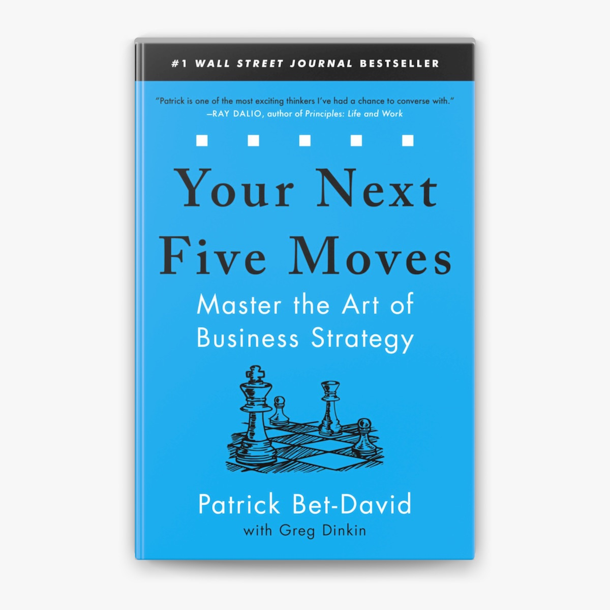
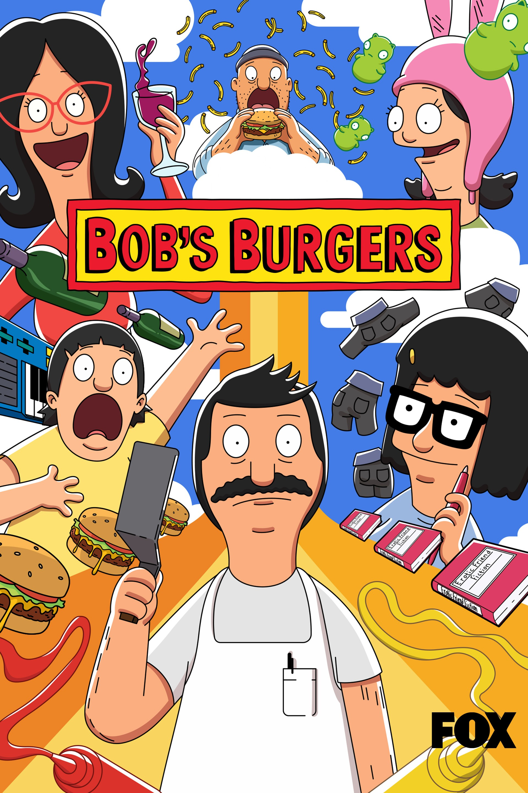
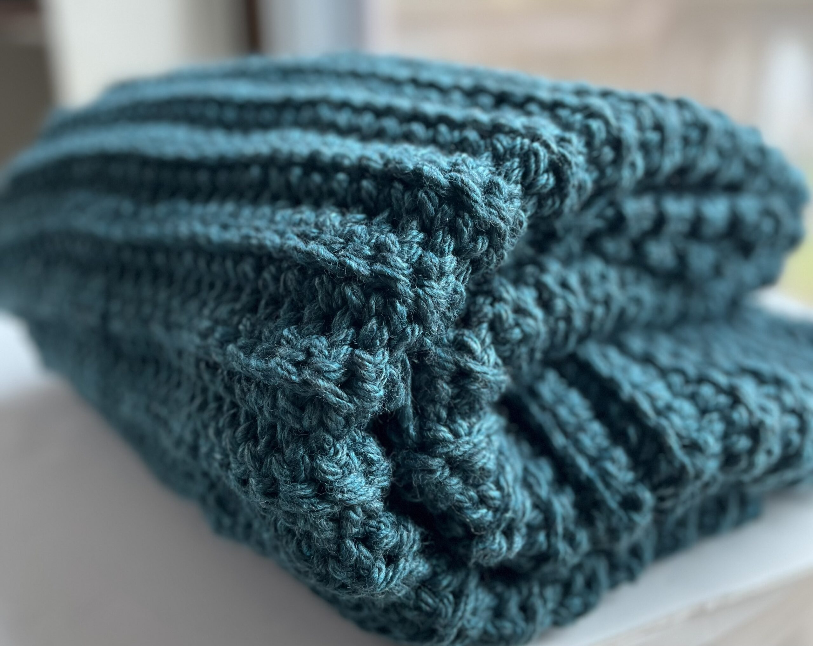

I'm so glad you have decided to explore my website.
I'm a graduate from Stevens Institue of Technology, with a bachelors of Science in Computer Science.
I am very passionate about data, and I hope to grow a career in data engineering and data science positions.
My journey into computer science began back in middle school. I loved watching videos on how prosthetic limbs were made. I love problem solving, and seeing scientists
problem solve real life problems with technological solutions amazed me. I continued this curiosity in highschool by begining coding classes, like AP computer science, and
python basics courses outside of school.
During my time at Stevens I truely have grown so much and learned what it means to be a coder. From coding in assembly to coding in R to learning two new coding languages
every semester, I truly appreciated my time at Stevens in my computer science journey.
Beyond Tech I love to pick up new hobbies. I enjoy reading, recently I've read "The 48 Laws of Power" and currently I'm reading "Your Next Five Moves".
When I'm not reading I enjoy journaling, sewing, and crocheting. I love making vision boards to outline my goals for the year and being able to craft.
Some of my favorite shows to watch are Abbot Elementary, The Office, and Bob's Burgers.
I also love to be part of clubs. At school I am a part of the Society of Women Engineers, STEP, the computer science club, and the Muslim Student Assoication.
I am also an America Needs You Alumni, and being part of the program allowed me to make lasting connections and gain valuable information about the coporate world.


